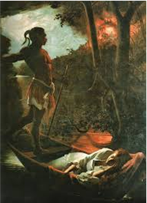
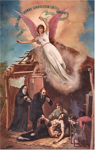
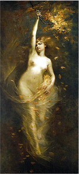

Horácio Hora (1853-1890)
Nascido em Laranjeiras, já começava seus trabalhos artísticos na infância. Em 1875 ganha do Império uma bolsa de estudos na Europa, permanecendo durante seis anos na Escola de Belas Artes de Paris e na Escola Municipal de Desenho de Paris, França, onde foi aluno do conceituado escultor Justin-Marie Lequien.
Retornou ao Brasil em 1881 e tentou viver em Sergipe, mas as condições provincianas desfavoráveis o impediram. Seguindo para Salvador, província da Bahia, onde tem grande receptividade. Retorna a Paris no final de sua vida, e lá se apaixona por uma engomadeira chamada Mathilde Lafage, e por ela vende tudo que possuía. Horácio vem a falecer em 1890, com apenas 37 anos, estando sepultado no cemitério do Père-Lachaise, em Paris.
Principais Trabalhos
Peri e Cici
Miséria e Cariade
Folhas de Outono
